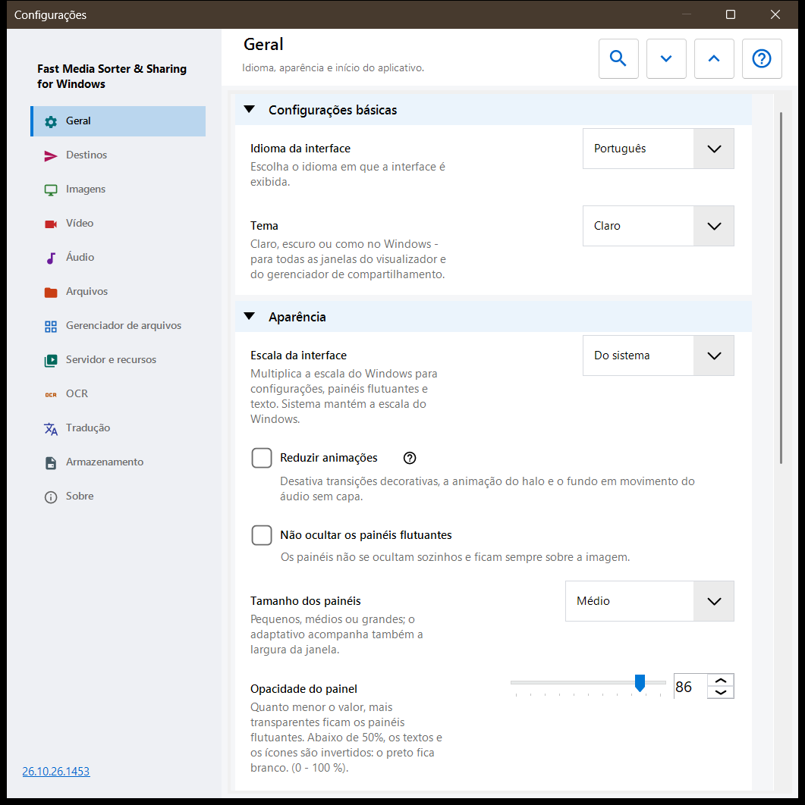
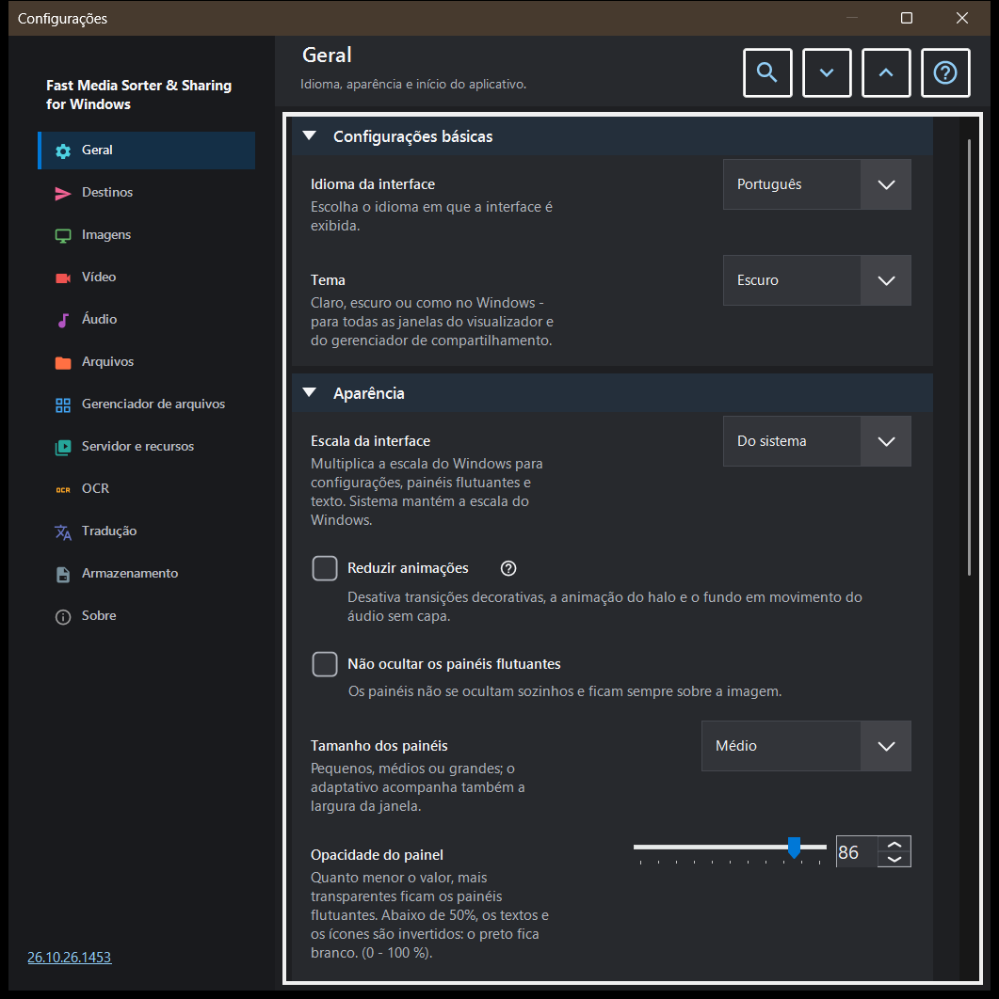

Configurações
Configurações
Finalidade
A janela Configurações reúne todas as opções do visualizador. Ela abre com F2, com o botão «Configurações» da barra de ferramentas ou, no gerenciador de arquivos do painel de imagens, com o botão «Configurações..», que vai direto à página Gerenciador de arquivos. As páginas estão listadas em uma barra lateral à esquerda, e os grupos de uma página podem ser recolhidos.


Nesta ordem
- Escolha uma página na barra lateral ou digite uma palavra em «Pesquisar configurações» para encontrar uma opção.
- Use «Expandir tudo» e «Recolher tudo» para abrir ou recolher todos os grupos da página.
- Altere as opções de que precisar.
- Pressione Esc para fechar a janela.
Os elementos
Geral
Idioma e tema, depois a aparência dos painéis flutuantes: escala da interface, movimento reduzido, fixação, tamanho, opacidade, cantos, as informações sobrepostas e a ocultação do cursor do mouse; o botão «Devolver os painéis aos seus lugares» leva todos os painéis movidos de volta ao lugar habitual. O grupo Inicialização decide o que acontece ao iniciar (abrir ao iniciar, continuar do último arquivo, permitir novas janelas) e tem «Mostrar novamente os passos de boas-vindas», que reabre a configuração inicial. O grupo Configurações avançadas exporta e importa as configurações adicionais e restaura os padrões.
Destinos
As dez pastas para as quais as teclas 1-9 e 0 movem um arquivo; Shift com um dígito da fileira superior copia para a mesma pasta. A grade tem uma linha por tecla: selecione uma linha e use «Uma pasta neste computador..», «Recursos» (uma pasta SFTP ou SMB) ou «Limpar», ou arraste uma pasta para a linha. O grupo Aparência da tabela de destinos define posição, largura, tamanho do texto, opacidade e linhas visíveis da tabela mostrada sobre a imagem, e «Tabela de destinos sobre a imagem» ativa ou desativa essa tabela.
Imagens
Como as imagens abrem e aparecem: escala de uma imagem nova, rotação automática pela tag EXIF, «Zoom com a roda do mouse», gráficos animados pelo player de vídeo e as informações de tamanho da imagem, tamanho do arquivo e data. Fundo da imagem define a cor ao redor de uma imagem, o Fundo em perspectiva e o halo (dinâmico, animado, velocidade). Comportamento da apresentação define o intervalo, a ordem aleatória, se a navegação manual interrompe a apresentação e o que a interface faz durante ela. A parte avançada tem o redimensionamento de alta qualidade e o tamanho do cartão das miniaturas.
Vídeo
Se os arquivos de vídeo participam da navegação, a reprodução automática, a ação ao fim de um clipe, lembrar a posição e «Som compartilhado: áudio e vídeo». Outros grupos contêm os idiomas preferidos de áudio e legenda e o controle de reprodução: o que um clique simples faz, o atraso dos controles, os controles em pausa e três passos de salto.
Áudio
Se os arquivos de áudio participam da navegação, a ação ao fim de uma faixa, o volume padrão e iniciar sem som. O grupo de informações e controle contém a barra de áudio sempre visível, o visualizador para arquivos sem capa e o temporizador de sono.
Arquivos
Tratamento de arquivos: avançar após copiar, o que acontece em um conflito de nomes e depois de copiar ou mover, a linha de status nas operações com arquivos, criar uma pasta de destino ausente, «Excluir para a Lixeira» e a confirmação de exclusão. Tipos de arquivo abrange subpastas, extensões, documentos, o tamanho da pré-visualização de texto e outros arquivos. Outros grupos definem os arquivos e pastas recentes, os limites de arquivos compactados e os arquivos protegidos .fd-sec. Teclas e associações tem o botão «Atalhos de teclado», que abre a janela de teclas de atalho, e as associações de arquivos para imagens e vídeo.
Gerenciador de arquivos
Opções do gerenciador de arquivos do painel de imagens: Modo de exibição (blocos ou lista), Filtro de conteúdo, arquivos ocultos e a ação para arquivos que não são mídia. O grupo Locais escolhe quais locais aparecem (locais, recursos, dispositivos) e tem «Lembrar ordenação».
Servidor e recursos
A lista Servidores e pastas de rede contém os recursos SFTP e SMB que o visualizador pode explorar e usar como destinos. O grupo Android / SFTP serve para publicar pastas deste computador por SFTP para o app Android; ele tem o guia de conexão e o botão «Gerenciar o servidor SFTP para o cliente Android..».
OCR
«Ativar OCR» ativa o reconhecimento de texto, e «Executar automaticamente» o deixa rodar sozinho. O grupo Reconhecimento de texto define o idioma de origem, a qualidade, o modo e o download dos dados de idioma.
Tradução
Escolha o serviço («Serviço de tradução») e o idioma de destino («Idioma da tradução»); outros campos contêm o endereço do serviço, o servidor Ollama local, o modelo e a chave de API. O grupo Tradução sobre a imagem define a opacidade e a visibilidade do painel de tradução sobre a imagem.
Armazenamento
Limites de cache com um botão de limpeza para cada um: imagens decodificadas, miniaturas do painel de imagens, arquivos compactados e recursos de rede. O cache em disco do OCR tem «Armazenar resultados em disco», um limite próprio e um botão de limpeza.
Sobre
Informações do produto e links: Atualizações, Redefinir configurações, Projetos relacionados, Ajuda do programa, Site do projeto, GitHub, Versões, Política de privacidade, Licença MIT e Componentes de terceiros e licenças. «Enviar os registros ao autor» mostra uma janela de consentimento que lista o que vai para o arquivo compactado e depois o entrega ao seu programa de e-mail; o programa não abre nenhuma conexão de rede para isso.
Documentos
Ative o leitor PDF separadamente dos filtros. Escolha página única, rolagem contínua ou duas páginas, cores, zoom, pesquisa e limites do cache. Botões de página mudam páginas, botões de arquivo mudam arquivos. Controles de texto recebem B/N, dígitos e Delete; Esc retorna à visualização. Redefinir a aparência preserva posições e marcadores nomeados. A leitura em voz alta usa vozes Windows instaladas. Senhas ficam na sessão. Uma cópia temporária local permite mover o original. A exportação normal omite histórico, marcadores e ajustes por documento.